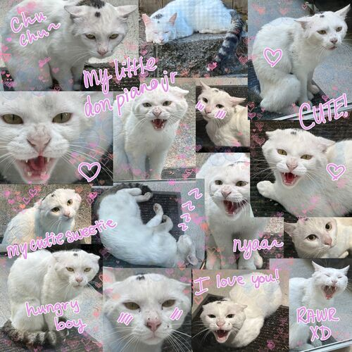
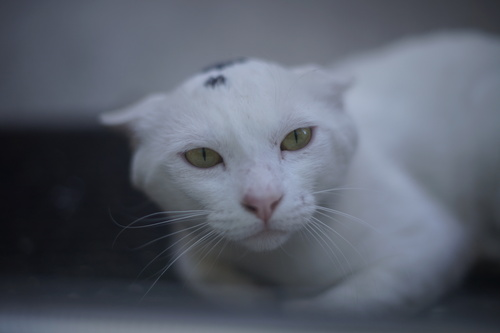
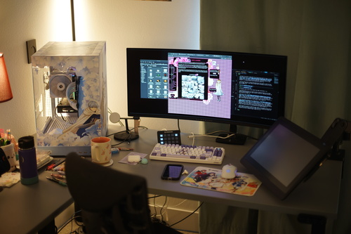
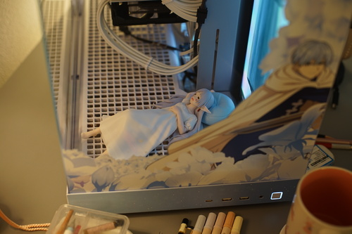
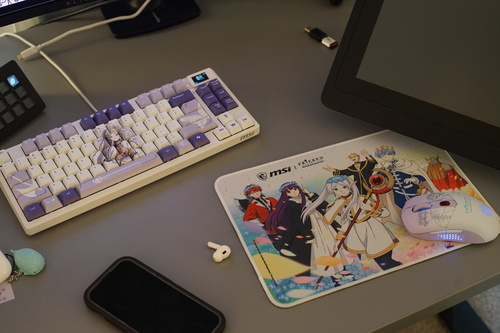

I am confirmed to be attending both Resin Rose this month and LA Dolpa next month! Look forward to my reports on both. I'm very excited! I haven't been to a doll convention since 2014!! That's 12 years ago??
I'm working on a little zine to hand out at Resin Rose and then plan to make an even better one of the same format for Dolpa. I was originally going to make the Resin Rose one non-Volks dolls (Liam, Alois, and Pafa), but I'm really unhappy with the state of Liam doll, so I decided a Hina only zine would be easiest. How many do I print?? I am not asking hors because she thinks only 10 people will want the copies at Dolpa! NO. YOU WANT ONE. TAKE ONE. I should probably print more business cards too.
I hope I'll be able to find Santi his own wig and eyes while I'm there. I'm also really excited to see Denim Dan's Jeans Emporium will be attending but it also looks like Kim has moved away from denim to focus on other textiles ;_; I've been wanting to meet Denim Dan for years!!
Can you believe DoA is closing during Resin Rose?? My account is almost 18 years old, my dudes. There's a DoA funeral at Resin Rose on Saturday at 2:45 so I'll do my best to attend.


I adopted a CAT!!! Isn't he the cutest?? His name is Don Piano Jr.

New battlestation alert!! I'll never be able to forget the time our hero Himmel saved my town by chasing off the rabid raccoons from my cat's food bowl now that he has his place all over my desk~

The case is from Starforge and it's uhh massive, to put it lightly. I cannot even lift this d*ng thing by myself. It's so fr*akin heavy. The panels are confusing and difficult to remove and it's not an easy case to build in. I hope it will be many years before I have to move or open it again!

Mero discovered a peripheral set is being made by MSI. I really wanted the Himmel mouse but it seems that you can only purchase it as a set. I didn't NEED the keyboard. I really love my Model M! I'm using it for now anyway. The mousepad is underwhelming, but I like that. I don't like it nearly as much as the Himmel one that came with the PC case. I'll never be able to use the beautiful white Himmel mousepad! This one? I don't care if it gets dirty.

The keyboard has options to change the gamer lights on the keyboard itself with the little screen and function keys, but the mouse does not. It seems you have to download the software for the mouse to be able to change the gamer lights on it. It has currently been tricked into not producing rainbows while on Linux, but it is merely a trick.